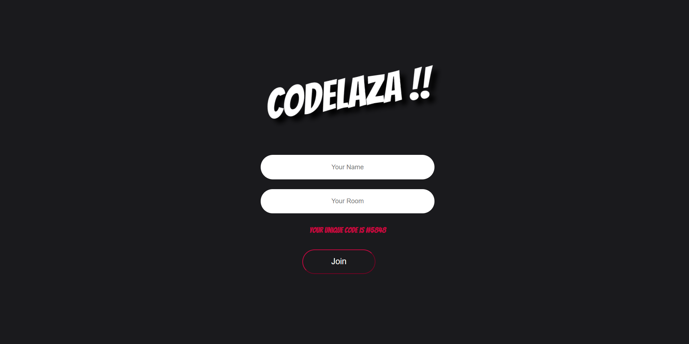
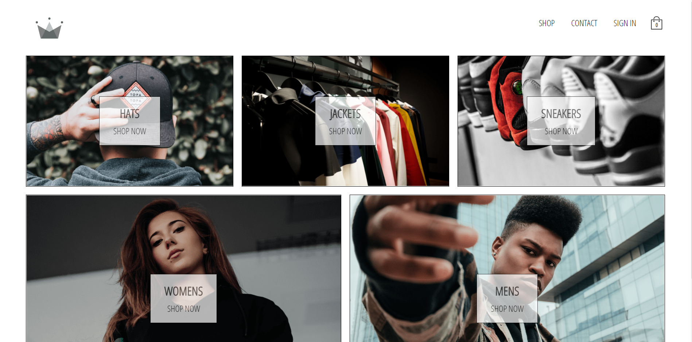
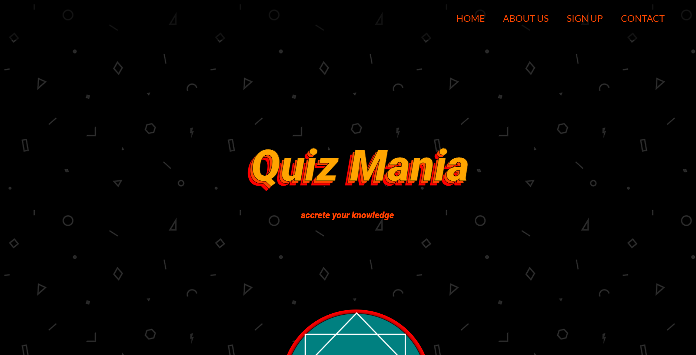

Hi there! I am Aditya, a second-year student pursuing B. tech in Information Technology at Vellore
Institute of
Technology, Vellore. There always exist a geek inside me which accompany with my eager to learn new
things. It all
started when I was in 11th class, my first step in the world of programming with c++. From there taking
baby steps I
build myself into a person with multidisciplinary skills.
Education
2019-present
Pursuing BTech from Vellore Institute of Technology in Information Technology
2017-2019
Higher Secondary education from D.A.V. Public School with 85% in PCM
2017
Matriculation from D.A.V. Public School with 10 CGPA
My Skills
As mentioned I started programming from class 11, from there till now I have explored and accreted other skills like web development. I have been practicing web development since 2019 as it is very fascinating to me. From here I started Machine learning and I am naive in this domain and has eager to explore it in depth.
Acquired Skills
MongoDB
ExpressJS
ReactJS
NodeJS
SciKit
Tensorflow
Seaborn
Keras
Work
As said "Knowledge is of no value unless you put it into practice. " – Anton Chekhov
. Thus, I put my skill into work to shape my thoughts about different websites and being sincere towards work is
my key to achieve anything. Here is a showcase of my previous work in web domain and looking forward for upcoming collaborations and future projects!!
Projects

Codelaza is a chat app developed to ease the process of sharing code.
It allows code highlighting, formatting and snippets for many languages and has themes too.
Tech stack: ReactJS, Redux, Socket.io, NodeJS
Crwn-clothing is an e-commerce website that has features like cart-items, payments with stripe and
sections for different clothes.
Tech stack: ReactJs, Redux, Firebase


QuizMania is a quiz app to accrete knowldge from different fields like politics, science, sports and games, and
many more. It is customizable with other features like difficulty level, number of questions and it also keep track of
your best attempts.
Tech stack: Jquery, NodeJs, MongoDB
Field of Interest
I am a keen learner and explore various things which I came accross in daily life. It is crucial for
a developer to undestand his/her ability and put your mind in that direction. Similarly, I figured out my
interest and desire to learn in the following fields.
My Interest
Web Delopment
I love to create webiste and web app with my skills like ReactJS, NodeJS, Jquery, MongoDB ...
NLP
I work on various NLP tools like NLTK, Spacy and more to let computers share its thought with me.
Computer Vision
Right now I am learning how to enable a system to see and enjoy the beauty around it.
Model Development
I make various call to Scikit and utilise it's response in solving various task using ML model.
Contact Me
Always open to those who desire to work for better tomorrow !! If you wanna conact me just ping me